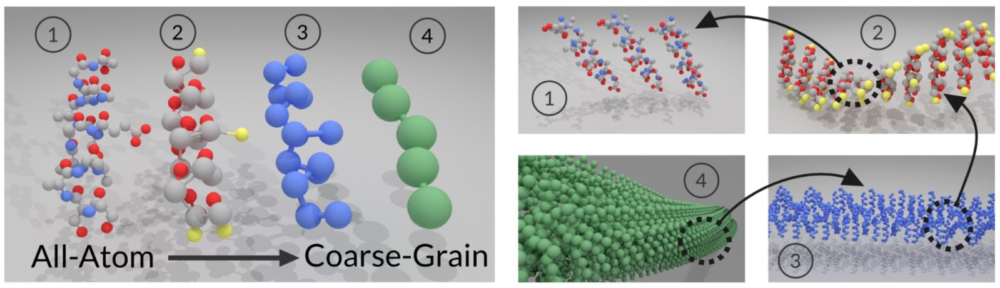

Applying Video Segmentation to Coarse-grain Mapping Operators in Molecular Simulations
Graduate Students: Maghesree Chakraborty, Zhiheng Li
Award Number: NSF CHE 1764415
Award Title: CDS&E: D3SC: Applying Video Segmentation to Coarse-grain Mapping Operators in Molecular Simulations
Award Amount: $488,605.00
Duration: 08/01/2018 - 07/31/2021 (estimated)
Overview and Goals:

Andrew White and Chenliang Xu of the University of Rochester is supported by an award from the Chemical Theory, Models and Computational Methods program in the Division of Chemistry to apply advances in computer vision to improve models of multiscale systems in chemistry. Multiscale systems describe chemical and physical processes that occur on many different time and spatial scales, for example, both very fast and very slow motions may contribute to the overall process. In both the computer processing of videos and the modeling of multiscale chemical systems, reducing complexity via removing extraneous details is essential. Without removing some model details, simulating multiscale processes like DNA transcription or the peptide aggregation which leads to plaque formation in Alzheimer's disease is impossible. Current approaches to reduce the number of atoms in a model rely on intuition and tradition due to the near infinite ways in which atoms can be removed or combined. White, Xu and their research groups are developing a novel approach built upon advances in video segmentation. Video segmentation is the process of identifying foreground, background, and objects in a video. Surprisingly, the same mathematical structure can be applied to chemical systems and that is the goal of this research. White, Xu and their collaborators will introduce the research to a broader audience via an augmented-reality laboratory for students. Students will be able to decide how to simplify molecular models and see the results by combining the visual experience of augmented-reality with the interactivity of molecular simulations.
Coarse-graining (CG) is the dimension reduction technique used to simulate multiscale systems more efficiently. There is not a rigorous theory for generating mappings from all-atom (fine-grain) system to the CG system. This missing component is essential because past CG work shows that many mappings lead to homogeneous, weakly interacting, gas-like CG models but the number of possible mappings is combinatorial with respect to the number of atoms. Andrew White and his collaborators are working to solve this mapping problem by (i) developing a theory to represent mapping algorithms based on video segmentation algorithms; (ii) creating a database of mappings and their performance on benchmark simulations to foster community involvement; (iii) studying and testing these methods on multi-protein surface interactions, where current mapping approaches struggle. Achieving success here, along with recent advances in calculating CG potentials, will better advance the community's ability to model complex multiscale phenomena.
Publications from the Team:
- H. Huang, L. Zhou, W. Zhang, J. J. Corso, and C. Xu. Dynamic graph modules for modeling object-object interactions in activity recognition. In Proc. of British Machine Vision Conference, 2019. [pdf]
- W. Zhao, S. Wang, Z. Xie, J. Shi, and C. Xu. GAN-EM: GAN based EM learning framework. In Proc. of International Joint Conference on Artificial Intelligence, 2019. [pdf]
- M. Chakraborty, C. Xu, and A. D. White. Encoding and selecting coarse-grain mapping operators with hierarchical graphs. Journal of Chemical Physics, 2018. [pdf]
Acknowledgements:
This project is supported under NSF CHE 1764415: "CDS&E: D3SC: Applying Video Segmentation to Coarse-grain Mapping Operators in Molecular Simulations." Any opinions, findings, and conclusions or recommendations expressed in this material are those of the author(s) and do not necessarily reflect the views of the National Science Foundation.